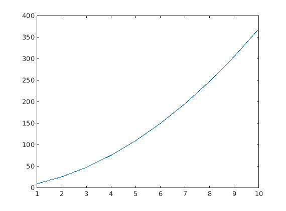
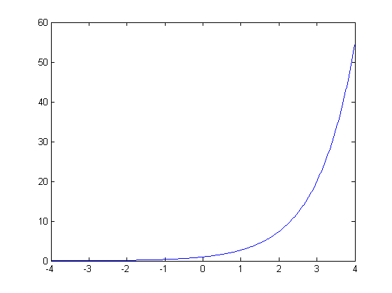
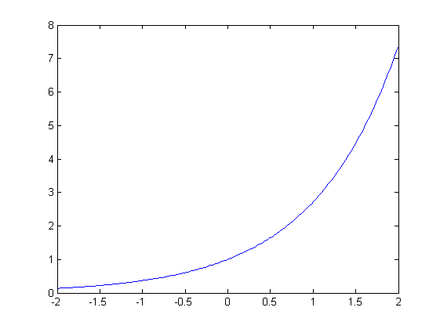
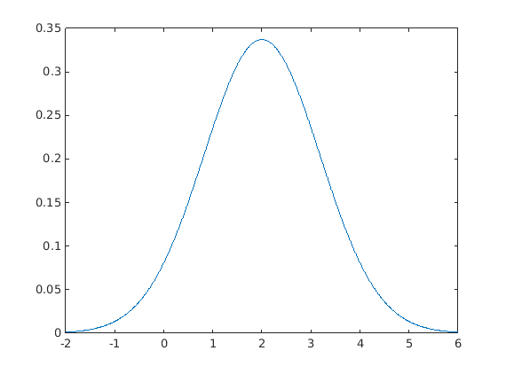
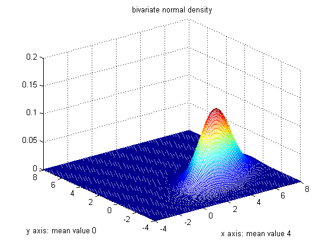

Introduction to MATLAB
Christian Groll
Chair of Financial Econometrics, Ludwig-Maximilians-University Munich.
All rights reserved.
Contents
The following script presents an introduction to basic MATLAB commands. It shows how different types of variables can be handled and manipulated in MATLAB, as well as how MATLAB can be used to produce graphical output.
Numeric variables
In MATLAB, an assignment of a certain value to a variable has to be implemented with an equality sign, where any expression on the right-hand side of the equality is assigned to the variable which is specified on the left-hand side. Variable names in MATLAB have to start with a letter, which can be followed by any number of letters, digits or underscores. Note that MATLAB is case sensitive, i.e. that lowercase and uppercase letters are distinguished.
% assign value 2 to a variable named x
x = 2
x =
2
You can also see the effect of the assignment in the workspace window. The column "value" now shows a 2 next to the entry x. The same syntax also can be used when the value of a given variable shall be assigned to another variable.
% assign value of variable x to variable b
b = x
b =
2
In order not to trigger an error, every variable on the right-hand side of an equality sign already has to possess a value.
% assignment with still undefined variable try d = c catch err err.message end
ans = Undefined function or variable 'c'.
While the first expression assigns the value of the variable x to the variable b, execution of the second expression will lead to an error, since the variable on the left-hand side is not yet defined. Leaving the error untreated would force MATLAB to stop the execution of the script, and throw an error message in red letters. In order to avoid an abortion, the error is treated with a try-catch construction at this point. To see the result of an untreated error, just uncomment the following line and execute the cell again.
% d = c
In order to assign a bundle of values to one variable, the values can be stored lined up horizontally or vertically, so that the containing variable becomes a vector. When values shall be lined up horizontally, MATLAB needs to know the index indicating the position of the value in the vector. Thereby the first position in a vector always gets index 1, contrary to 0 as in some other programming languages.
x(2) = 4
x =
2 4
Assigning value 4 to the second position renders x into a 1x2 horizontal vector. To meet larger generality, it is best to interpret scalar values and vectors as special cases of the larger class of matrices right away. Hence, any assignment needs two indices to uniquely specify a position in a matrix.
x(1,2) = 4
x =
2 4
Following the usual mathematical notation, the first index refers to the vertical position, and the second index to the horizontal position.
x(2,1) = 3 x(2,2) = 4
x =
2 4
3 0
x =
2 4
3 4
Explained more precisely, the original assignment x = 2 actually performs two commands. First, the value 2 is assigned to the variable x. And second, the new value of the variable x is displayed in the command window.
In order to prevent MATLAB from displaying the new state of a variable, each assignment has to be equipped with a semicolon at its end. Hence, displaying the new value of a variable after an assignment can be seen as something like a default setting, which has to be denied explicitly when it is not wanted.
% the following assignment is not displayed x(2,2) = 8; % to query the new value, type the variable name x
x =
2 4
3 8
Given that we assign a value outside of the already used rectangular of indices, the matrix is automatically increased to include the new index, while elements of the enlarged matrix without specified values are automatically filled with zeros.
x(3,4) = 8
x =
2 4 0 0
3 8 0 0
0 0 0 8
Note that MATLAB is forced to automatically enlargen the matrix, since it can only work with numerical variables of rectangular shape. An example with occurring error in case of misspecified matrix shape will follow at the end of the next cell.
In order to simplify the assignment of a bunch of numbers, all matrix entries also can be assigned all at once. Be careful: the syntax in this case requires SQUARED brackets! Furthermore, the semicolons within the squared brackets tell MATLAB to assign the next values to positions one row further down.
% assigning multiple values at once
x = [1 2 0; 1 3 4; 2 2 2]
x =
1 2 0
1 3 4
2 2 2
Note: for clarity one can also use commas in order to better delimit individual entries within a row.
x = [2, 3, 4; 1, 3, 1; 2, 2, 2]
x =
2 3 4
1 3 1
2 2 2
As already mentioned, unequal dimensions produce an error.
try k = [2 2 2 2 2; 1 1; 4 4 4 4 4 4 4 4] catch err err.message end
ans = Dimensions of matrices being concatenated are not consistent.
Once a variable has been initialized through value assignments, there are several ways to find out all its values or the value at any entry. The first way is to display the variable to the command window by simply typing its name. However, when dealing with large matrices, it is not convenient to let MATLAB display the complete matrix. A preferable way is to let MATLAB display only the entry required, which can be done by telling MATLAB the variable name associated with an index in square brackets.
% get value at row 1, column 2
x(1,2)
ans =
3
A different way to find out any value of a variable is to use the variable editor, which can be opened either by double-clicking the variable's name in the workspace, or by highlighting the variable's name, right-clicking and chosing "Open".
Matrix Concatenation
Since MATLAB originally was built on matrix calculations, MATLAB programs involve a lot of matrix manipulations. Therefore, MATLAB provides an auxiliary merging-operator, in order to facilitate merging and manipulation commands. This merging-operator is executed with squared brackets, and is able to horizontally or vertically concatenate matrices, which is the process of joining small matrices to make bigger ones. Strictly speaking, an assignment of multiple values at once is nothing else than horizontally and vertically glueing together scalar values.
% glueing together values 3 and 4 horizontally, assigning to c c = [3 4] % two ways to add additional row d = [3 4; 2 3]; d = [c; 2 3]; % glueing together block matrices [[d; c] x]
c =
3 4
ans =
3 4 2 3 4
2 3 1 3 1
3 4 2 2 2
In order to simplify code, some often used matrices can be accessed by calling existing functions.
% determine matrix size m = 2; n = 3; % create matrix containing ones onesMatr = ones(m,n) % create matrix containing zeros zeroMatr = zeros(m,n) % create matrix containing uniformly distributed random numbers unifMatr = rand(m,n)
onesMatr =
1 1 1
1 1 1
zeroMatr =
0 0 0
0 0 0
unifMatr =
0.6797 0.1626 0.4984
0.6551 0.1190 0.9597
In addition, MATLAB has an operator to create numerical sequences with constant increments. This operator is called with three numbers and two colons.
% increments of size 2, starting at 1, ending at 11 1:2:11 % increments of size 5.5, starting at 14, ending at 40 14:5.5:40
ans =
1 3 5 7 9 11
ans =
14.0000 19.5000 25.0000 30.5000 36.0000
In case of increments of size 1, one can also use the short notation involving only one colon together with a number specifying the starting value and a number specifying the ending value.
% increments of size 1, starting at 1, ending at 4
1:4
ans =
1 2 3 4
Both concatenation and the colon operator to create number sequences can be used to simultaneously retrieve information about matrix entries. The basic notation here is that a vector at the first entry in square brackets refers to all rows involved, while a vector at the second entry refers to all columns involved. In doing so, the set of all indices involved is given by the intersection of the specified rows and columns.
% display entries (1,3), (1,2) and (1,3) of x [x(1,3) x(1,2) x(1,3)] % same result, as intersection of row 1 with columns x(1,[3 2 3]) % 2x2 upper block matrix x([1 2],[1 2]) % using number sequence x(1:2,1:2)
ans =
4 3 4
ans =
4 3 4
ans =
2 3
1 3
ans =
2 3
1 3
In cases of unknown matrix size, the last element also can be accessed with replacement statement "end".
% display last two rows and last two columns
x(2:end,2:end)
x(end-1:end,end-1:end)
ans =
3 1
2 2
ans =
3 1
2 2
Using the colon operator without additional numbers denotes either a complete row or a complete column of a matrix.
% concatenate once the first and twice the third column of a c = [x(:,1) x(:,3) x(:,3)]; % additionally append last row of x c = [c; x(end,:)]
c =
2 4 4
1 1 1
2 2 2
2 2 2
The same syntax also can be utilized to delete complete columns or rows from a matrix. Just specify the desired horizontal or vertical line via the colon operator, and assign an empty matrix to it.
% delete third row
c(:,3) = []
c =
2 4
1 1
2 2
2 2
Matrix calculation
MATLAB is able to perform the standard operations on matrices.
% addition x = [2 3; 4 2]; b = [1; 2]; bMatr = b(1:2,[1 1]) c = x + bMatr % subtraction c = x - bMatr;
bMatr =
1 1
2 2
c =
3 4
6 4
While addition and subtraction operate elementwise, matrix multiplication does not. Matrix multiplication is defined as scalar products of row and column vectors.
% multiplication of 2x2 matrix c with 2x1 vector b
matrProd1 = c*b
matrProd2 = [c(1,1)*b(1)+c(1,2)*b(2); c(2,1)*b(1)+c(2,2)*b(2)]
matrProd1 =
5
2
matrProd2 =
5
2
Matrix division is defined as inversion to matrix multiplication on square matrices.
matrProd = x*c % retrieve x by reversion matrProd/c x % this equals multiplication with inverse of c matrProd*inv(c)
matrProd =
8 4
8 8
ans =
2 3
4 2
x =
2 3
4 2
ans =
2 3
4 2
However, when working with MATLAB in statistical applications, we usually interpret matrices as tables of data. Hence, performing matrix operations on matrices might not be the most natural way to process numeric variables. For example, let nSold denote a vector containing the number of sold products on consecutive days, while prices denotes a vector which contains the average achieved price per sale. We want to get a vector profits of same length as nSold and prices, containing the profits for each day.
% initialize sale vector nSold = [2 3 2 1] % initialize price vector prices = [2.3 2.4 2.3 2.0] % notation for elementwise multiplication profits = nSold.*prices
nSold =
2 3 2 1
prices =
2.3000 2.4000 2.3000 2.0000
profits =
4.6000 7.2000 4.6000 2.0000
While addition and subtraction are the same for arrays and matrices, element-by-element operations on arrays have to be called with a dot in front of the operator. This rule also applies to some additional operators. Hence, element-wise division is called by ./, while exponentiating can be conducted with the .^ operator. Together with the numeric sequence operator, element-wise operations are very useful to evaluating functions on certain values and creating tables. For example, say you would have to evaluate the function f(x)=3*x^2+7*x at values 1 to 10.
% init(ialize) grid for points that shall be evaluated grid = 1:10; % for each entry of grid, evaluate function per element-wise % operations grid squared = grid.^2 squaredScaled = 3*squared scaled = 7*grid vals = squaredScaled+scaled
grid =
1 2 3 4 5 6 7 8 9 10
squared =
1 4 9 16 25 36 49 64 81 100
squaredScaled =
3 12 27 48 75 108 147 192 243 300
scaled =
7 14 21 28 35 42 49 56 63 70
vals =
10 26 48 76 110 150 196 248 306 370
Graphical output
Whenever we need to visualize the graph of a function based on existing tabulated values, we have to draw a line through the calculated values, thereby interpolating the function in between. The interpolated values are determined by MATLAB itself, so that we only have to pass the tabulated values to MATLAB. One-dimensional functions usually are best visualized with the command plot, which draws a line through specified points. Since each point of the function is given by two coordinates (x- and y-value), the plot command also needs both dimensions as input.
% passing coordinates for each points to visualization function plot(grid,vals) % vector of x-values, vector of y-values
When using any graphical visualization command an additional window opens, which has to be understood as consisting of two parts. The first part is the figure window itself. This part, for example, contains information about the size of the window as well as about the reference number of the figure. The second part is an axes object, and can be seen as the white colored rectangle within the gray window. This axes object contains information about the used axes, where they begin and where they end, and where additional ticks are shown in between. Furthermore, labels of the ticks, fontsizes of the labels as well as coordinates for the exact positioning of the white rectangle inside of the gray rectangle are properties of the axes object. These properties can not be accessed directly, but have to be changed via methods performing on the object (get() and set()).
Functions
Besides the existing operators that can be used to data manipulation and calculation, MATLAB also includes functions that can be called. Usually, a call to a function requires some additional input handed over to the function and is associated with some output calculated by the function. For example, function exp() calculates the exponential function at a given value.
% calculate exponential function at point 3 exp(3) % calculate log function at point 1 log(1)
ans =
20.0855
ans =
0
As already outlined above, financial applications usually perform analysis on data, so that matrices rather have to be seen as arrays or tables of data, instead of as matrices expressing algebraic content. This way, element-wise operations become more accentuated, which is the reason that most built-in MATLAB functions accept matrices as input, where each entry will be processed by the function on its own. This way we can calculate more than one point of the exponential function at a time.
% init points where exp shall be evaluated grid = -4:0.02:4; % calculate associated function values vals = exp(grid);
Using function size, we can see that the dimensions of the output vals complies with the dimensions of the input vector. This is not surprising, since exactly one function value has to be calculated for each point given in the input vector.
% get size of input inputSize = size(grid) % first number: number of rows % get size of output outputSize = size(vals)
inputSize =
1 401
outputSize =
1 401
Now the exponential function can be visualized in the known way.
% visualize function values
plot(grid,vals)
 As a first example for manipulation of the axes object, suppose we wanted to shrink the section of the x-values depicted, which equals zooming into the picture. In order to apply a method to an axes object, we first have to specify the exact object. In this case, it is possible to refer to the axes object as current axes, since it is the last axes object that we created. This is done by gca (get current axes).
% use method set() on current axes, change property x-limits set(gca,'xLim',[-2 2])
Before we will conduct a first meaningful application, we now shortly want to deal with a main problem in computer based applications. Suppose you want to perform a certain manipulation on your data. How do you know, whether there already exists a MATLAB function performing this task, and if there was any, how would you find it? One way is to use the lookfor command. With it, you can search the MATLAB documentary for certain keywords. MATLAB then will search the first line of the help text of all functions on the search path for a certain keyword.
% find a function that performs permutation on vector elements lookfor permutation
randperm - Random permutation. amd - Approximate minimum degree permutation. colamd - Column approximate minimum degree permutation. colperm - Column permutation. dmperm - Dulmage-Mendelsohn permutation. symamd - Symmetric approximate minimum degree permutation. symrcm - Symmetric reverse Cuthill-McKee permutation. perms - All possible permutations. create_permutations - Creates a population of permutations. crossover_permutation - Custom crossover function for traveling salesman. mutate_permutation - Custom mutation function for traveling salesman.
Another way would be to let MATLAB display all functions in a given category. For example, request all elementary matrices and matrix manipulation:
help elmat
Elementary matrices and matrix manipulation.
Elementary matrices.
zeros - Zeros array.
ones - Ones array.
eye - Identity matrix.
repmat - Replicate and tile array.
linspace - Linearly spaced vector.
logspace - Logarithmically spaced vector.
freqspace - Frequency spacing for frequency response.
meshgrid - X and Y arrays for 3-D plots.
accumarray - Construct an array with accumulation.
: - Regularly spaced vector and index into matrix.
Basic array information.
size - Size of array.
length - Length of vector.
ndims - Number of dimensions.
numel - Number of elements.
disp - Display matrix or text.
isempty - True for empty array.
isequal - True if arrays are numerically equal.
isequaln - True if arrays are numerically equal, treating NaNs as equal.
Matrix manipulation.
cat - Concatenate arrays.
reshape - Reshape array.
diag - Diagonal matrices and diagonals of matrix.
blkdiag - Block diagonal concatenation.
tril - Extract lower triangular part.
triu - Extract upper triangular part.
fliplr - Flip matrix in left/right direction.
flipud - Flip matrix in up/down direction.
flip - Flip the order of elements.
rot90 - Rotate matrix 90 degrees.
: - Regularly spaced vector and index into matrix.
find - Find indices of nonzero elements.
end - Last index.
sub2ind - Linear index from multiple subscripts.
ind2sub - Multiple subscripts from linear index.
bsxfun - Binary singleton expansion function.
Multi-dimensional array functions.
ndgrid - Generate arrays for N-D functions and interpolation.
permute - Permute array dimensions.
ipermute - Inverse permute array dimensions.
shiftdim - Shift dimensions.
circshift - Shift array circularly.
squeeze - Remove singleton dimensions.
Array utility functions.
isscalar - True for scalar.
isvector - True for vector.
isrow - True for row vector.
iscolumn - True for column vector.
ismatrix - True for matrix.
Special variables and constants.
eps - Floating point relative accuracy.
realmax - Largest positive floating point number.
realmin - Smallest positive floating point number.
intmax - Largest positive integer value.
intmin - Smallest integer value.
flintmax - Largest consecutive integer in floating point format.
pi - 3.1415926535897....
i - Imaginary unit.
inf - Infinity.
nan - Not-a-Number.
isnan - True for Not-a-Number.
isinf - True for infinite elements.
isfinite - True for finite elements.
j - Imaginary unit.
true - True array.
false - False array.
Specialized matrices.
compan - Companion matrix.
gallery - Test matrices.
hadamard - Hadamard matrix.
hankel - Hankel matrix.
hilb - Hilbert matrix.
invhilb - Inverse Hilbert matrix.
magic - Magic square.
pascal - Pascal matrix.
peaks - A sample function of two variables.
rosser - Classic symmetric eigenvalue test problem.
toeplitz - Toeplitz matrix.
vander - Vandermonde matrix.
wilkinson - Wilkinson's eigenvalue test matrix.
Other category names would be "specfun" for special functions and "elfun" for elementary functions. Of course, an additional and usually worthwhile option would be to simply type some keywords into Google's search engine.
Try yourself
You should now try yourself at the "Matlab basics - practice" part in Matlab Coursework.
For-loops and linearization
Now we want to plot the density function of a normal distribution. The formular for the density function is given by f(x)=(2*pi*sigma)^(-0.5)*exp(-0.5*((x-mu)^2/sigma)). In the course of this application we also introduce the syntax for loops in MATLAB, and show their performance with a different approach using simple matrix calculations. A loop executes a series of commands for a pre-specified number of iterations. However, any loop usually needs a running variable that changes at each iteration. For example, if you want to store the results of your code inside the loop, you would have to adapt the index of your storing variable, in order to not overwrite your results. The syntax of loops is rather simple. Just type "for" to indicate the beginning of a loop, choose a running variable and specify a vector of values which will be taken by the running variable.
% init params mu = 2; sigma = 1.4; grid = -2:0.01:6; tic % start MATLAB's stopwatch to return processing time of % for loop for ii=1:numel(grid) % Chronologically, for each point in grid. % numel() returns number of elements x = grid(ii); % current x-value for density evaluation y(ii) = (2*pi*sigma)^(-0.5)*exp(-0.5*((x-mu)^2/sigma)); % adapt index of storing variable to avoid overwriting end % end of loop time1 = toc; % get time required to execute code from tic to % toc and store it in variable time1
While the code is very intuitive and simple, there are two main drawbacks with respect to performance. First, since you have not told MATLAB prior to the execution of the loop, how large your storing variable y will get, MATLAB will take any free space in its memory to store the variable y at the first run of the loop. However, since the required storage of y will increase during each loop, it could happen that y at some point will need more storage than what is available at the previously chosen location in its memory. In consequence, MATLAB would have to take all stored results in y and shift them to another and bigger place in its memory, which is rather time-consuming. Therefore, you always should tell MATLAB beforehand how large your storage variable will get. And secondly, since MATLAB is optimized for matrix calculations, you always have to try to linearize your code in order to avoid for loops. Here is an improved version of the code, using element-wise function evaluations on grid:
tic y = (2*pi*sigma)^(-0.5) * exp(-0.5*(grid-mu).^2/sigma); time2 = toc; % visualization to check for mistakes plot(grid,y) % calculate factor of performance improvement factor = time1/time2; % formatted output fprintf('\nSecond code is faster with factor %3.3f\n',factor); % \n stands for change to new line % %3.3f is the format for the ouput of the variable inserted
Second code is faster with factor 106.986
Of course, such an important function is already implemented in MATLAB. Hence, the same results also can be obtained by
% y = normpdf(grid,mu,sigma);
In order to further highlight the importance of preallocation, we will try a second example.
tic N = 10e3; x(1) = 1000; for k=2:N x(k) = 1.05*x(k-1); end time1 = toc; tic N = 10e3; x = zeros(N,1); x(1) = 1000; for k=2:N x(k) = 1.05*x(k-1); end time2 = toc; fprintf('\nPart one takes %2.3d times longer.\n',time1/time2)
Part one takes 9.567e-01 times longer.
The same performance improvements also apply to the case of a two-dimensional normal distribution. However, we first introduce two further helpful operators in MATLAB. The first is the transpose operator, which forms the complex conjugate transpose of a matrix, i.e. it simply transposes matrices without complex part.
% init random matrix x = rand(3) % show transposition transp = x'
x =
0.3404 0.7513 0.6991
0.5853 0.2551 0.8909
0.2238 0.5060 0.9593
transp =
0.3404 0.5853 0.2238
0.7513 0.2551 0.5060
0.6991 0.8909 0.9593
The second operator is the vectorization operator. Applied to a matrix, it takes each column and attaches it at the bottom of the previous columns to get one large vector containing all entries of matrix a.
% vectorization, with subsequent transposition to keep displayed % output space-saving x(:)'
ans =
Columns 1 through 7
0.3404 0.5853 0.2238 0.7513 0.2551 0.5060 0.6991
Columns 8 through 9
0.8909 0.9593
These operations will prove useful in the performance-improved encoding of the two-dimensional density. But first we will implement the more easy way using for loops.
% init params mu = [4; 0]; % vector containing both mean values sigma = [1.5; 1]; % vector containing both standard deviations rho = 0.5; % correlation coefficient % init grid grid = -4:0.1:8; % same grid will be used for both axes % start stopwatch tic % preallocate storage matrix for better performance results z = zeros(numel(grid),numel(grid)); xGrid = zeros(numel(grid),numel(grid)); % since we want to plot yGrid = zeros(numel(grid),numel(grid)); % the results at the end, % grid coordinates and density values have to be % arranged in a matrix % calculate values: for each x value, run through all y values for ii=1:numel(grid) % loop for x coordinate / row vector for jj=1:numel(grid) % loop for y coordinate / column vec. xGrid(jj,ii) = grid(ii); yGrid(jj,ii) = grid(jj); x = grid(ii); y = grid(jj); z(jj,ii)=(2*pi*sigma(1)*sigma(2)*sqrt(1-rho^2))^(-1)*... exp(-(1/(2*(1-rho^2)))*... ((x-mu(1))^2/sigma(1)^2+(y-mu(2))^2/sigma(2)^2-... 2*rho*(x-mu(1))*(y-mu(2))/sigma(1)/sigma(2))); % Note: when plotting a matrix, row vectors will % appear in x-direction. Hence, the first for-loop % here calculates the values along the x-direction, % and the second along the y-direction. end end time1 = toc;
Vectorization for two-dimensional problems is quite more demanding than in the one-dimensional case. However, looking at the implemented for-loops in the cell above you can see that you implicitly evaluated the density on all possible two-dimensional combinations of the values in the grid vector. Using a simple example helps to illustrate this.
exampleGrid = 1:3; storageVar = []; xGridExam = zeros(numel(exampleGrid)*[1 1]); yGridExam = zeros(numel(exampleGrid)*[1 1]); for ii=1:numel(exampleGrid) for jj=1:numel(exampleGrid) xGridExam(jj,ii) = exampleGrid(ii); yGridExam(jj,ii) = exampleGrid(jj); storageVar = [storageVar;... [exampleGrid(ii) exampleGrid(jj)]]; % attaches each % new point combination below the previous ones end end storageVar xGridExam yGridExam
storageVar =
1 1
1 2
1 3
2 1
2 2
2 3
3 1
3 2
3 3
xGridExam =
1 2 3
1 2 3
1 2 3
yGridExam =
1 1 1
2 2 2
3 3 3
In effect this code does the following: it choses the value of the x-coordinate, holds it fixed, and runs through all y-coordinate values. Since in graphical outputs of matrices the x-axis is defined as the row dimension, the code evaluates column after column of the final density value matrix.
We now have to achieve a similar result without using for-loops. Lets first concentrate on the values of the x-coordinate matrix. In order to replicate this matrix, we just have to stick three times the original grid vector above each other. A very useful function for such a task is repmat, which stands for "replicate matrix", and allows you to form a block matrix consisting of smaller matrices which are replicates of a given matrix.
% example x = [1 2; 3 4]; % 2 replicates of x above each other, 3 next to each other repmat(x,2,3)
ans =
1 2 1 2 1 2
3 4 3 4 3 4
1 2 1 2 1 2
3 4 3 4 3 4
Hence, the coordinate matrices are obtained by
xCoord = repmat(exampleGrid,3,1) yCoord = repmat(exampleGrid',1,3)
xCoord =
1 2 3
1 2 3
1 2 3
yCoord =
1 1 1
2 2 2
3 3 3
Applying the same procedure to the original task:
% start stopwatch tic % create coordinate matrices xGrid2 = repmat(grid,numel(grid),1); yGrid2 = repmat(grid',1,numel(grid)); % evaluate density elementwise on grid matrices z2 = (2*pi*sigma(1)*sigma(2)*sqrt(1-rho^2))^(-1)*... exp(-(1/(2*(1-rho^2)))*... ((xGrid2-mu(1)).^2/sigma(1)^2+... (yGrid2-mu(2)).^2/sigma(2)^2-... 2*rho*(xGrid2-mu(1)).*... (yGrid2-mu(2))/sigma(1)/sigma(2))); time2 = toc; % calculate factor of performance improvement factor = time1/time2; % formatted output fprintf('\nSecond code is faster with factor %3.3f\n',factor); % \n stands for change to new line % %3.3f is the format for the ouput of the variable inserted
Second code is faster with factor 303.539
check for deviations of previous results
deviations = [max(max(xGrid-xGrid2)),... max(max(yGrid-yGrid2)),... max(max(z-z2))]
deviations =
0 0 0
Of course, the bivariate density function also exists in MATLAB.
% calculate covariance matrix covVar = [sigma(1)^2 rho*sigma(1)*sigma(2); ... rho*sigma(1)*sigma(2) sigma(2)^2]; % using vectorized coordinates as input z3 = mvnpdf([xGrid(:) yGrid(:)],mu',covVar); % reshape result to comparable size z3 = reshape(z3,size(xGrid));
Visualization is obtained by using either mesh() or surf().
mesh(xGrid,yGrid,z) xlabel(['x axis: mean value ' num2str(mu(1))]) ylabel(['y axis: mean value ' num2str(mu(2))]) title('bivariate normal density') % fit axes to grid points evaluated set(gca,'xLim',[grid(1) grid(end)],'yLim',[grid(1) grid(end)])
String variables
String variables represent series of characters. In order to assign a string to a variable, the expression has to be enclosed with apostrophes. This way, MATLAB automatically defines the variable's type as string.
s = 'This is a string!'
s = This is a string!
Strings also can be packed into a matrix. However, a string in a matrix has to be interpreted as an array of individual characters. Hence, in order to pack two strings into a matrix, the string dimensions have to match the same way as the dimensions of row vectors have to match in a matrix with numeric entries.
s = ['abc';'cba']
s = abc cba
Using strings of different lengths produces an error.
try t = ['abc'; 'abcd'] catch err err.message end
ans = Dimensions of matrices being concatenated are not consistent.
Cell variables
Cell arrays are used when variables of different types shall be stored in a single variable. For example, an entry in a cell array can contain a numeric value as well as a matrix with numeric entries. Furthermore, it can also obtain a string (an array of characters) or a structure variable. In contrast to the variable types so far, cell arrays are initialized using curled brackets!
c = {'abe','kdkdkd'}
c{2,1} = 4535
x = [2 3 2; 1 2 2; 4 5 6];
c{2,2} = x
c =
'abe' 'kdkdkd'
c =
'abe' 'kdkdkd'
[4535] []
c =
'abe' 'kdkdkd'
[4535] [3x3 double]
Imagine, you wanted to store historic stock prices in a cell array. Hence, you could fill one entry with a string variable containing the name of the stock, one entry with a matrix of numeric values containing the closing prices and one entry with a matrix containing associated dates. One problem when working with cell arrays is, that you always have to keep track about the arrangement of the different variables in the cell array yourself! This way, your code becomes more error prone, since you could accidentially mix up the entries, and overwrite the stock prices, while you only wanted to change the name of the stock. In order to improve the code with respect to this danger of confusions, MATLAB has come up with a way to store different data types, where the individual entries are not indexed with numbers, but with field names. Such variables are called structure variables.
Structure variables
When using structure variables, individual fields are addressed by simple name extensions to the name of the variable. Consider a structure variabe stock1 containing stock information.
stock1.name = 'BMW'; stock1.dates = ['01.02.2001';'02.02.2001';'03.02.2001']; stock1.prices = [112; 114; 111]; stock1
stock1 =
name: 'BMW'
dates: [3x10 char]
prices: [3x1 double]
In order to display the information of a structure variable, one has to use a similar syntax.
stock1.dates
ans = 01.02.2001 02.02.2001 03.02.2001
The same syntax also has to be used when information of a field shall be assigned to a new variable.
dates = stock1.dates
dates = 01.02.2001 02.02.2001 03.02.2001
Tables
Since version R2013b Matlab also has a data structure similar to DataFrames in R. These tables allow to store data of mixed types, the only restriction being that all columns need to be of equal length. For the advantages of tables take a look at the online documentation at http://www.mathworks.de/de/help/matlab/matlab_prog/advantages-of-using-tables.html
load patients patientTable = table(Gender,Age,Smoker,Diastolic); % get subset of data as table subTable = patientTable(:, 1:2); % get subset of data as matrix valuesThemself = patientTable{:, 2:4}; % get invalid subset of data try invalidData = patientTable{:, 1:2} catch err err.message end
ans = Cannot concatenate the table variables 'Age' and 'Gender', because their types are double and cell.
Tables: logical indexing
still to come
mathematical functions
could corrupt logical data: all patients become smokers
patientTable{:, 2:4} = patientTable{:, 2:4} + 3000
patientTable =
Gender Age Smoker Diastolic
________ ____ ______ _________
'Male' 3038 true 3093
'Male' 3043 true 3077
'Female' 3038 true 3083
'Female' 3040 true 3075
'Female' 3049 true 3080
'Female' 3046 true 3070
'Female' 3033 true 3088
'Male' 3040 true 3082
'Male' 3028 true 3078
'Female' 3031 true 3086
'Female' 3045 true 3077
'Female' 3042 true 3068
'Male' 3025 true 3074
'Male' 3039 true 3095
'Female' 3036 true 3079
'Male' 3048 true 3092
'Male' 3032 true 3095
'Female' 3027 true 3079
'Male' 3037 true 3077
'Male' 3050 true 3076
'Female' 3048 true 3075
'Female' 3039 true 3079
'Female' 3041 true 3088
'Female' 3044 true 3090
'Female' 3028 true 3096
'Male' 3025 true 3077
'Female' 3039 true 3080
'Female' 3025 true 3076
'Male' 3036 true 3083
'Male' 3030 true 3089
'Female' 3045 true 3092
'Female' 3040 true 3083
'Female' 3025 true 3080
'Male' 3047 true 3084
'Male' 3044 true 3092
'Female' 3048 true 3083
'Male' 3044 true 3090
'Female' 3035 true 3085
'Male' 3033 true 3090
'Female' 3038 true 3074
'Male' 3039 true 3092
'Male' 3044 true 3080
'Male' 3044 true 3089
'Male' 3037 true 3096
'Male' 3045 true 3089
'Female' 3037 true 3077
'Male' 3030 true 3081
'Female' 3039 true 3076
'Male' 3042 true 3083
'Male' 3042 true 3078
'Male' 3049 true 3095
'Female' 3044 true 3091
'Female' 3043 true 3091
'Female' 3047 true 3086
'Male' 3050 true 3089
'Female' 3038 true 3079
'Female' 3041 true 3074
'Male' 3045 true 3082
'Male' 3036 true 3076
'Female' 3038 true 3081
'Female' 3029 true 3077
'Female' 3028 true 3073
'Female' 3030 true 3085
'Female' 3028 true 3076
'Female' 3029 true 3080
'Male' 3036 true 3080
'Female' 3045 true 3079
'Female' 3032 true 3082
'Female' 3031 true 3079
'Female' 3048 true 3082
'Male' 3025 true 3075
'Female' 3040 true 3091
'Male' 3039 true 3074
'Female' 3041 true 3078
'Female' 3033 true 3085
'Male' 3031 true 3084
'Female' 3035 true 3075
'Male' 3032 true 3078
'Male' 3042 true 3081
'Female' 3048 true 3079
'Male' 3034 true 3085
'Male' 3039 true 3079
'Male' 3028 true 3082
'Female' 3029 true 3080
'Female' 3032 true 3080
'Male' 3039 true 3092
'Female' 3037 true 3092
'Female' 3049 true 3096
'Female' 3031 true 3087
'Female' 3037 true 3081
'Male' 3038 true 3090
'Male' 3045 true 3077
'Female' 3030 true 3091
'Male' 3048 true 3079
'Female' 3048 true 3073
'Male' 3025 true 3099
'Male' 3044 true 3092
'Male' 3049 true 3074
'Male' 3045 true 3093
'Male' 3048 true 3086